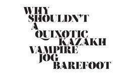

Article
PANGRAMS! Forsaking monastic tradition, twelve jovial friars gave up their vocation for a questionable existence on the flying trapeze. Sphinx of black quartz, judge my vow. The five boxing wizards jump quickly. Five quacking zephyrs jolt my wax bed. Crazy Fredrick bought many very exquisite opal jewels. We promptly judged antique ivory buckles for the next prize. Jaded zombies acted quaintly but kept driving their oxen forward.
And, of course— The quick brown fox jumps over the lazy dog.
Eachdraidh an sgadain, tha fhios againn air an fhacal fhèin sgadan, skat fisk a’ ciallachadh gun robh, aig aon àm, Àm nan Lochlannach, bha daoine a’ pàigheadh màl à skat, sgadan skat. Tha skat a’ ciallachadh iasg a bha daoine a’ pàigheadh, bha iad a’ pàigheadh màl leis an iasg a bha sin, saillte no ùr, chan eil sinn buileach cinnteach, ach ‘s e sin a’ chiad rud mu dheidhinn eachdraidh an èisg a tha seo.